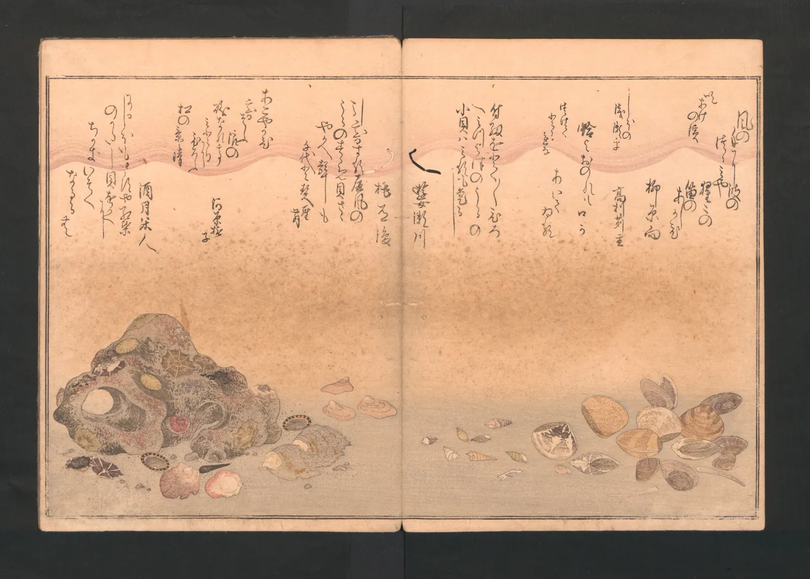

지면과 화면 구성
버스 정류장 벽에 붙은 포스터를 보는 시간은 길어야 몇 초다. 웹사이트 첫 화면도 비슷하다. 그 몇 초 안에 "무슨 행사인지, 언제인지, 어디서인지"가 읽혀야 한다. 그림은 오래 머물며 천천히 보아도 되지만, 포스터와 웹 화면은 읽히는 순서까지 설계해야 하는 그림이다. 이 장은 앞에서 배운 구도의 언어(점·선·면, 무리, 시선, 균형, 여백, 프레임)를 글자와 정보가 있는 지면에 옮긴다. 그리고 서윤의 겨울 과제 중 두 가지, 연말 낭독회 포스터와 책방 E 웹사이트 첫 화면을 마무리한다.
- 크기·굵기·명도·색·위치·여백으로 시각적 위계를 세우고, 크기 단계의 비를 정한다.
- 보이지 않는 정렬선이 화면을 정돈하는 방식을 알고, 정렬선의 수를 줄인다.
- 무리 안의 간격과 무리 사이의 간격으로 정보를 묶는다.
- Z 패턴과 F 패턴 같은 시선 패턴 주장이 어떤 근거에서 나왔고 어디까지 믿을 수 있는지 구별한다.
- A2 세로 포스터와 웹 첫 화면(가로 화면, 휴대폰)을 직접 짜고, 첫 화면 안에 꼭 보여야 할 것을 계산으로 확인한다.
지면은 읽히는 그림이다
포스터, 책의 한 면, 웹 화면처럼 글과 그림을 한 화면에 배치하는 일을 레이아웃(Layout)이라고 한다. 레이아웃도 구도다. 화면 안에 면과 선과 점을 놓고, 무게를 맞추고, 여백을 정한다. 다른 점은 하나다. 보는 사람이 그 안에서 정보를 찾아야 한다. 그래서 레이아웃에서는 "무엇이 먼저 보이고, 무엇이 다음에 보이는가"가 가장 중요한 질문이 된다. 화면 안의 요소들이 눈에 띄는 정도의 순서를 시각적 위계(Visual hierarchy)라고 한다.
아래 그림의 두 포스터에는 똑같은 글이 들어 있다. 왼쪽은 모든 줄을 같은 크기, 같은 굵기로 가운데에 쌓았다. 오른쪽은 같은 글을 세 단계의 크기로 나누고, 왼쪽 정렬선 하나에 맞추고, 관계있는 것끼리 묶었다.
그림이었다면 왼쪽 포스터의 고른 리듬도 하나의 선택일 수 있다. 하지만 지나가는 사람이 몇 초 안에 행사의 이름과 날짜를 알아야 하는 지면이라면, 오른쪽이 일을 더 잘한다. 레이아웃의 판단 기준도 이 책의 다른 장과 같다. 무엇을 전하려는가, 그리고 보는 사람이 어떤 상황에서 보는가.
위계: 먼저, 다음, 나중
위계를 만드는 도구는 앞 장들에서 이미 만났다. 크기(큰 것이 먼저), 굵기와 명도 대비(바탕과 차이가 큰 것이 먼저, ColorBook 6장), 색(채도가 높은 하나가 먼저, ColorBook 7장), 위치(위와 시작 쪽이 먼저인 경향, 5장), 고립과 여백(홀로 떨어진 것이 먼저, 10장). 이 가운데 지면에서 가장 많이 쓰는 것은 크기다. 그리고 크기는 몇 개의 단계로 나눌 때 가장 잘 읽힌다.
디자이너들은 흔히 글자 크기를 일정한 비로 늘어나는 단계로 정한다. 가장 작은 본문 크기를 \(s_0\)로 두고 한 단계마다 같은 비 \(q\)를 곱하는 방식이다. 이렇게 정한 크기 묶음을 크기 단계(Type scale, 모듈러 스케일)라고 부른다.
아래 시뮬레이터에서 \(q\)를 바꿔 본다. 포스터 글은 세부(\(k=0\)), 날짜·장소(\(k=1\)), 제목(\(k=2\))의 세 단계다. "흐리게 보기"를 켜면 화면을 실눈 뜨고 본 것처럼 흐리게 만든다. 흐려도 남는 것이 위계의 위쪽이다.
크기 단계로 세우는 위계
q가 1에 가까우면 위계가 없고, 3을 넘으면 위계가 아니라 독재가 된다. 많은 디자이너가 포스터에서는 1.5에서 2.5 사이, 정보가 많은 웹 화면에서는 그보다 작은 비를 즐겨 쓴다고 말하지만, 이것은 관례이지 정해진 값이 아니다. 중요한 것은 단계의 수를 적게 두는 것이다. 글자 크기가 일곱 가지인 포스터는 크기가 하나뿐인 포스터만큼이나 위계가 흐리다. 세 단계, 많아야 네 단계로 정리하면 단계마다 할 일이 분명해진다.
정렬: 보이지 않는 선
잘 짠 지면에는 그려지지 않은 선이 있다. 제목의 왼쪽 끝, 사진의 왼쪽 끝, 날짜의 왼쪽 끝이 한 수직선 위에 있으면, 선을 긋지 않아도 눈은 그 선을 본다. 이렇게 요소들의 끝이나 중심을 같은 선에 맞추는 것을 정렬(Alignment)이라고 한다. 4장의 연속성 원리가 지면에서 일하는 모습이다. 정렬선을 공유하는 요소들은 서로 관계있어 보이고, 화면 전체가 정돈되어 보인다. 반대로 요소마다 조금씩 다른 위치에서 시작하면, 그 어긋남이 실수처럼 보인다. 1~2 mm의 어긋남이 10 mm의 어긋남보다 더 거슬리기도 한다. 일부러 어긋난 것인지 실수인지 알 수 없기 때문이다. 11장의 접선과 같은 이유다.
아래에서 포스터의 다섯 요소를 끌어 옮겨 본다. 둘 이상의 요소가 공유하는 정렬선이 표시되고, 어떤 선에도 맞지 않은 요소가 몇 개인지 센다.
보이지 않는 정렬선
왼쪽 정렬과 가운데 정렬은 어느 쪽이 옳은 것이 아니라 성격이 다르다. 가운데 정렬은 대칭이라 격식 있고 조용하다. 청첩장, 기념비의 글, 책의 속표지가 가운데 정렬을 많이 쓰는 이유다. 왼쪽 정렬은 비대칭이라 움직임이 있고, 줄의 시작이 늘 같은 자리에 있어 긴 글을 읽기 쉽다. 7장의 비대칭 균형과 잘 어울린다. 한 지면에 둘을 섞으면 축이 둘이 되어 정렬의 힘이 약해지므로, 섞을 때는 이유가 있어야 한다.
무리: 간격이 말한다
4장에서 가까이 있는 것은 한 무리로 보인다는 근접의 원리를 봤다. 지면에서 이 원리는 간격의 규칙이 된다. 한 무리 안의 간격은 좁게, 무리와 무리 사이의 간격은 그보다 확실히 넓게. 이 규칙이 지켜지면 선이나 상자를 그리지 않아도 정보가 저절로 묶인다. 거꾸로 무리 안의 간격과 무리 사이의 간격이 비슷하면 모든 줄이 한 덩어리가 되고, 무리 사이가 더 좁으면 엉뚱한 것끼리 묶인다.
아래는 책방 E 웹사이트의 "이번 달 행사" 목록이다. 행사마다 날짜, 제목, 설명 세 줄이 있다. 두 슬라이더로 무리 안 간격(줄 사이)과 무리 사이 간격(행사 사이)을 바꾼다. 점선 상자는 간격만 보고 눈이 묶을 법한 무리를 이 장의 단순한 규칙으로 찾은 것이다.
간격으로 묶이는 행사 목록
무리 사이 간격을 무리 안 간격의 몇 배로 할지에 정답은 없다. 하지만 "확실히 다르게"가 핵심이다. 1.2배 차이는 눈이 구별하지 못하고, 2배쯤부터 분명해진다는 것이 디자이너들의 경험이다. 4장에서 서윤이 웹 첫 화면에 세운 무리 간격 규칙도 이 원리 위에 있다. 간격 말고도 무리를 묶는 방법은 많다. 같은 바탕색 위에 놓기(공통 영역), 같은 색이나 모양 쓰기(유사), 선으로 잇기. 하지만 선과 상자는 화면을 무겁게 하므로, 간격으로 충분하면 간격만 쓰는 편이 가볍다.
Z와 F: 시선 패턴의 근거
레이아웃에 관한 글에는 "사람의 눈은 Z자로 움직인다", "웹 사용자는 F자로 읽는다"는 말이 자주 나온다. 그래서 로고는 왼쪽 위에, 행동 버튼은 오른쪽 아래에 두라는 처방이 따라온다. 이 주장들은 어디서 왔고, 얼마나 믿을 수 있을까.
Z 패턴의 뿌리로 자주 거론되는 것은 신문 디자이너 에드먼드 아널드(Edmund C. Arnold)의 이름이 붙은 구텐베르크 도식(Gutenberg diagram)이다. 비슷한 무게의 글이 고르게 깔린 지면에서, 왼쪽에서 오른쪽, 위에서 아래로 읽는 습관 때문에 눈이 왼쪽 위에서 시작해 오른쪽 아래에서 끝난다는 생각이다. 신문 지면을 오래 짠 사람들의 경험칙이고, 이를 직접 검증한 시선 추적 연구는 찾기 어렵다. 게다가 이 도식의 전제는 "모든 요소의 무게가 비슷한 지면"이다. 큰 사진이나 굵은 제목이 하나만 있어도 눈은 그쪽으로 먼저 간다. 위계가 분명한 포스터에서는 Z보다 위계가 이긴다.
F 패턴은 사용성 연구자 야코프 닐센(Jakob Nielsen)이 2006년에 닐센 노먼 그룹의 시선 추적 연구를 바탕으로 소개했다. 글이 많은 웹 화면에서 사람들이 위쪽 몇 줄은 가로로 길게 읽고, 아래로 갈수록 왼쪽 시작 부분만 세로로 훑는 경향을 보였다는 것이다. 같은 연구 집단은 2017년의 후속 글에서, F 패턴은 소제목과 강조 같은 서식이 없는 글 덩어리를 효율적으로 훑을 때 나타나는 결과이며 디자이너가 일부러 따라야 할 목표가 아니라고 정리했다. 소제목이 분명하면 사람들은 소제목만 골라 훑고(층을 이루는 모양), 특정 낱말을 찾을 때는 여기저기 점처럼 본다고도 보고했다.
| 주장 | 어디서 왔나 | 근거 수준 | 이 책의 쓰임 |
|---|---|---|---|
| Z 패턴(구텐베르크 도식) | 신문 편집의 경험칙 | 직접 측정한 근거는 약하다. 고른 지면이라는 전제가 있다 | 위계가 약한 지면에서 참고만 |
| F 패턴 | 웹 화면 시선 추적 연구(2006), 후속 정리(2017) | 특정 조건(서식 없는 긴 글)에서 반복 관찰 | "글 덩어리는 왼쪽 시작만 읽힌다"는 경고로 |
| "사람은 왼쪽 위부터 본다" | 읽기 방향의 습관 | 경향은 있으나 과제·문화·화면 내용에 따라 크게 달라진다 | 위계가 비슷할 때의 순서 정하기에 |
| "버튼은 오른쪽 아래" | Z 패턴에서 나온 처방 | 일반 법칙으로 볼 근거 없음 | 쓰지 않는다. 위계로 정한다 |
읽기 방향도 변수다. 아래 그림은 18세기 일본의 그림책 한 펼침면이다. 글은 세로로 쓰여 오른쪽에서 왼쪽으로 읽히고, 그림책도 오른쪽에서 왼쪽으로 넘긴다. 이런 지면에서 "왼쪽 위에서 시작하는 Z"는 성립하지 않는다. 한국의 옛 책도 세로쓰기였고, 오늘날의 한국어 웹 화면은 가로쓰기다. 시선 패턴은 눈의 본성이라기보다 읽는 습관과 지면의 짜임이 함께 만든 결과다.

아래 시뮬레이터는 같은 웹 화면 시안을 세 가지 가정으로 "읽어" 본다. Z 패턴 가정, F 패턴 가정, 이 장의 현저성 모형. 가정마다 행동 버튼("예약하기")이 몇 번째로 읽히는지가 달라진다. 글 양을 늘리면 어떻게 되는지도 본다.
가정이 바뀌면 순서도 바뀐다
세 가정이 서로 다른 답을 낸다는 것 자체가 이 절의 결론이다. 시선 패턴은 레이아웃을 정하는 공식이 아니다. 대신 쓸모 있는 경고 두 가지를 남긴다. 위계가 약하면 눈은 읽기 습관대로 흐르니 중요한 것을 끝자리에 두지 말 것. 글이 많고 서식이 없으면 왼쪽 시작 부분만 읽히니 중요한 낱말을 줄의 앞에 두고 소제목을 달 것. 5장에서 서윤이 시선 추적 장비 대신 동료 다섯 명에게 간이 테스트를 하고 그 결과를 "참고"로만 적은 것도 같은 태도다.
포스터 짜기
포스터가 한 장르로 자리 잡은 것은 19세기 후반 파리에서 다색 석판화가 거리 광고에 쓰이면서부터라고 흔히 설명된다. 앙리 드 툴루즈로트레크(Henri de Toulouse-Lautrec, 1864–1901)의 카바레 포스터는 지금 봐도 위계가 분명하다.

로트레크의 포스터에는 글자가 적다. 가게 이름, 주소, 운영자 이름 정도다. 대신 그림 하나가 크게, 평평한 색면으로, 멀리서도 읽히게 그려져 있다. 이 장의 언어로 다시 쓰면 위계의 1단계는 큰 면, 2단계는 제목 띠, 3단계는 작은 글이다. 머리가 잘린 가수는 11장에서 본 과감한 자르기다. 일본 판화에서 배운 평평한 색면과 비대칭 구도가 거리의 광고와 만난 결과로 자주 설명된다.
이제 서윤의 낭독회 포스터(A2 세로, 420×594 mm)를 짠다. 앞 장들에서 정한 것이 재료다. 큰 면 하나와 작은 점 하나(2장), 제목→그림→날짜의 시선 경로(5장), 비대칭 균형(7장), 여백(10장), 세로로 다시 찍은 쇼윈도 사진(11장). 큰 면의 자리에는 11장에서 세로로 다시 찍은 쇼윈도 사진을 짙은 테두리에 담아 넣었다. 5장 시안의 주황빛 등불 그림이 하던 일을 불 켜진 창이 맡는 셈이다. 아래에서 배치안 세 가지를 고르고, 여백을 바꾸고, 작은 붉은 점을 끌어 옮긴다.
낭독회 포스터 짜기
세 안을 비교하면 A안이 앞 장들의 결정과 가장 잘 맞는다. 제목이 위에서 시작하고, 큰 면은 가운데에서 조금 왼쪽에 서서(7장의 비대칭 균형), 날짜가 그 바로 아래 가운데에 붙는다(5장). 세부 정보는 오른쪽 아래로 물러나 작은 붉은 점과 함께 큰 면의 무게에 맞선다. 크기는 세부, 장소, 날짜, 제목의 단계로 q ≈ 2씩 커진다. B안은 사진을 가장 크게 쓸 수 있지만 글자 대비를 지키려면 사진을 어둡게 누르거나 글자 띠를 따로 깔아야 한다. 어느 안이 정답이라기보다, 각 안이 무엇을 얻고 무엇을 내주는지를 숫자와 눈으로 함께 확인하는 것이 목적이다.
웹 첫 화면 짜기
웹 첫 화면은 포스터와 비슷하면서 두 가지가 다르다. 첫째, 화면의 크기와 비율이 보는 사람의 기기마다 다르다. 같은 페이지가 넓은 모니터에서는 가로로 긴 16:9 근처로, 휴대폰에서는 세로로 긴 화면으로 열린다. 둘째, 화면은 아래로 이어진다. 스크롤하지 않고 처음 보이는 부분을 신문 용어를 빌려 첫 화면(Above the fold)이라고 부른다. 접힌 신문의 윗단에 해당한다는 뜻이다. 사람들이 아래로 스크롤하지 않는다는 오래된 믿음은 연구로 많이 반박되었지만(사람들은 내용이 이어진다는 단서가 있으면 잘 내린다), 첫 화면이 그 페이지의 첫인상과 "계속 볼지"를 정한다는 점은 여전하다.
아래 종합 시뮬레이터에서 가로 화면(1,440×810)과 휴대폰(390×844, 주소창 등을 빼고 보이는 높이 약 660으로 가정)을 함께 짠다. 가로 화면의 배치 세 가지, 휴대폰에서 쓸 사진 비율 세 가지를 고르고, 4장에서 정한 무리 간격 규칙을 켜고 끌 수 있다.
책방 E 웹 첫 화면
가로 화면과 휴대폰을 함께 놓고 보면, 웹 첫 화면은 하나의 그림이 아니라 같은 위계를 지키는 여러 그림이라는 것을 알게 된다. 넓은 화면에서는 사진과 글이 나란히 서고, 좁은 화면에서는 위아래로 쌓인다. 배치는 달라도 순서(사진과 제목 → 날짜 → 예약 버튼 → 신간)는 같아야 하고, 휴대폰에서도 예약 버튼까지는 첫 화면에 들어오는 것이 좋다. 그러려면 휴대폰에서는 사진의 비율부터 다시 골라야 한다. 11장에서 "가장 좁은 화면부터 정한다"고 했던 것이 여기서도 그대로 적용된다.
서윤의 작업 노트
포스터 한 장과 첫 화면 두 개를 같은 순서로
11장에서 자른 사진을 들고 서윤은 포스터와 웹 첫 화면을 함께 펼쳤다. 먼저 주인과 내용의 순위표를 합의했다. 1위 "연말 낭독회", 2위 "12월 19일 토요일 저녁 7시", 3위 예약 방법, 4위 장소 "책방 E", 5위 참가비와 인원 같은 세부. 주인은 신간 소식도 크게 넣고 싶어 했지만, 순위표를 보더니 웹에서는 첫 화면 아래쪽 무리로 두는 데 동의했다.
포스터는 세 안을 이 장의 시뮬레이터로 비교한 뒤 A안을 골랐다. 5장의 시선 경로와 7장의 비대칭 균형, 9장에서 정한 작은 점의 자리를 그대로 두고, 2장의 큰 면 자리에는 11장에서 세로로 다시 찍은 쇼윈도 사진을 짙은 테두리(#22342a)에 담아 넣었다. 제목 "겨울 밤 낭독회"가 위에서 시작하고, 날짜는 큰 면 바로 아래 가운데(글자 높이 약 24 mm), 세부는 오른쪽 아래로 물러났다. 크기는 세부, 장소, 날짜, 제목이 q ≈ 2씩 커지는 단계다. 이 장의 모형은 읽기 순서를 사진 → 제목 → 날짜 → 세부 → 붉은 점으로 예상했다. 5장의 모형이 제목과 그림을 거의 같은 끌림으로 본 것과 같은 결론이다. 첫머리는 사람에 따라 바뀔 수 있다. 붉은 점이 꼴찌로 나온 것을 보고 도경은 7장에서 한 말을 되풀이했다. "혼자 떨어진 점은 계산보다 무거워 보여." 서윤은 교정쇄가 나오면 5장처럼 동료들에게 다시 보여 확인하기로 했다. B안은 사진이 가장 컸지만 제목 아래 쇼윈도가 밝아 크림색 제목의 최악 지점 대비가 1.23까지 떨어졌다. 도경은 B안의 사진이 아깝다고 했지만, "글자를 읽게 하려고 사진을 어둡게 누르면 그건 이미 다른 사진"이라는 서윤의 말에 고개를 끄덕였다.
웹은 가로 화면과 휴대폰을 같은 순서로 맞추는 데 시간이 걸렸다. 가로 화면은 사진 왼쪽(폭의 58%), 글 오른쪽. 11장의 16:9 사진은 비율을 바꿔 창 안쪽을 다시 잘랐다. 휴대폰에서는 처음에 SNS용 4:5를 그대로 쓰려 했는데, 그러면 예약 버튼이 첫 화면 아래로 밀렸다. 1:1로 바꾸자 버튼 아래 끝이 보이는 높이 660 안쪽에 들어왔다. 메뉴, 행사, 신간의 세 무리는 4장에서 정한 대로 무리 사이를 무리 안보다 확실히 넓혔다. 간격은 4장의 무리 안 12 px, 무리 사이 40 px(약 3배)를 그대로 썼다.
| 항목 | 서윤의 선택 | 확인한 값 |
|---|---|---|
| 포스터 배치 | A안: 제목 위, 큰 면(쇼윈도 사진)은 가운데에서 조금 왼쪽, 날짜는 그 아래 가운데, 세부는 오른쪽 아래 | 모형 순서 사진 → 제목 → 날짜 → 세부 → 붉은 점(교정쇄로 재확인) |
| 포스터 크기 단계 | 세부 · 날짜 · 제목, q ≈ 2 (폭의 2.6% · 5.7% · 11.4%) | 흐리게 봐도 제목, 큰 면, 날짜가 남음 |
| 포스터 글자색 | 크림 바탕(#ffe2d7) 위 짙은 색 #22342a | 대비 10.74 |
| 웹 가로 화면 | 사진 왼쪽 58% · 글 오른쪽, 예약 버튼 책방 초록 | 버튼 첫 화면 안, 흰 글자 대비 4.99 |
| 웹 휴대폰 | 사진 1:1(창 안쪽) → 제목 → 날짜 → 예약 버튼 | 버튼 아래 끝 598 < 660 (4:5면 696) |
| 무리 간격 | 메뉴 · 행사 · 신간, 무리 안 12 · 무리 사이 40(약 3배) | 4장의 무리 구분 유지 |
핵심 정리
- 레이아웃은 읽히는 순서까지 설계하는 구도다. 무엇이 먼저 보이고 무엇이 나중에 보이는지(시각적 위계)가 핵심 질문이다.
- 위계는 크기, 굵기와 명도 대비, 색, 위치, 고립과 여백으로 만든다. 글자 크기는 \(s_k = s_0 q^k\)처럼 몇 개의 단계로 나누고, 단계의 수를 적게 둔다.
- 요소들의 끝이나 중심을 같은 선에 맞추면(정렬) 그리지 않은 선이 화면을 정돈한다. 정렬선은 적게, 어긋남은 확실하게. 격자는 정렬선을 미리 그어 둔 것이다(자세한 것은 TypeBook).
- 무리 안 간격은 좁게, 무리 사이 간격은 확실히 넓게. 간격이 뒤집히면 정보가 거짓으로 묶인다.
- Z 패턴은 고른 지면에 대한 경험칙, F 패턴은 서식 없는 긴 글에서 관찰된 결과다. 둘 다 공식이 아니며, 위계가 분명하면 위계가 이긴다. 읽기 방향과 과제에 따라 시선은 달라진다.
- 웹 첫 화면은 화면마다 다른 그림이지만 같은 순서를 지켜야 한다. 가장 좁은 화면에서 꼭 보여야 할 것(예: 예약 버튼)이 첫 화면에 들어오는지 계산으로 확인한다.
확인 퀴즈
1. 포스터의 글자를 세 단계로 나누려 한다. 가장 작은 글자가 12, 단계 사이의 비가 q = 2라면 세 단계의 크기는?
2. 행사 목록에서 날짜·제목·설명 세 줄 사이 간격이 20, 행사와 행사 사이 간격이 12다. 어떤 일이 생기기 쉬운가?
3. "웹 사용자는 F자로 읽으니 모든 페이지를 F자 모양으로 배치하라"는 조언에 대해 이 장의 설명과 가장 맞는 것은?
4. 휴대폰 웹 첫 화면(보이는 높이 약 660)에 머리 띠 56, 사진, 제목 두 줄, 날짜, 예약 버튼을 차례로 쌓는다. 화면 폭이 390일 때 예약 버튼까지 첫 화면에 넣기 위한 판단으로 가장 알맞은 것은?